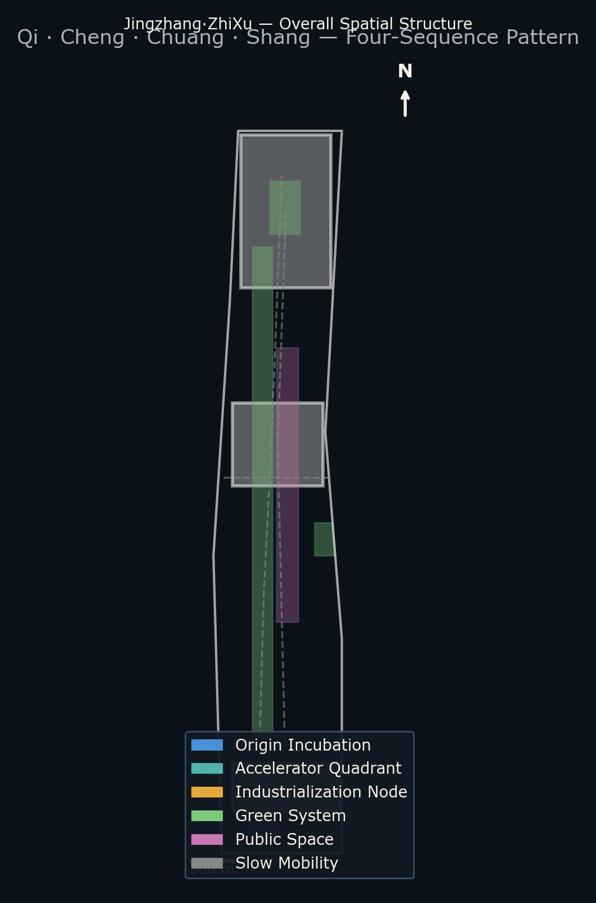
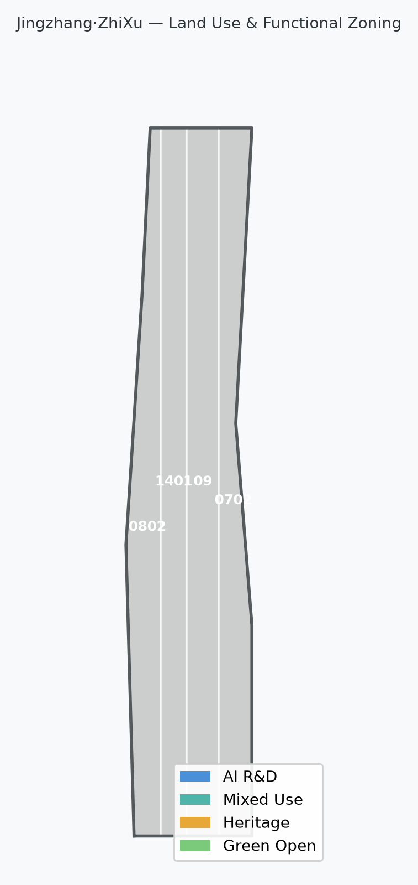
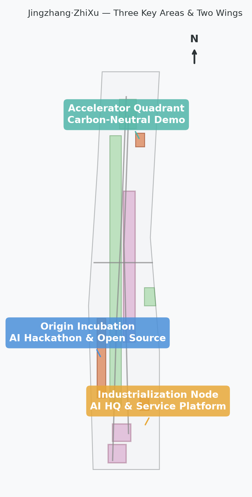
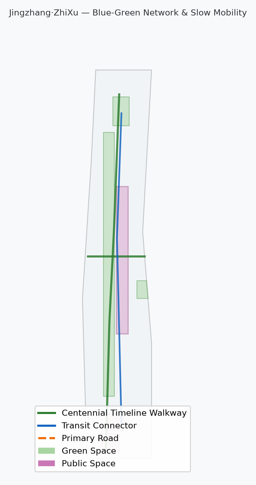

One Spine
Centennial Jing-Zhang AI Innovation Belt
Master Concept: Jingzhang·ZhiXu · AI Opens Jing-Zhang · AI Continues Jing-Zhang · AI Creates Jing-Zhang · AI Elevates Jing-Zhang
A unified vision of temporal sequence and urban order: Qi·Prologue (North Station) → Cheng·Heritage (13km legacy belt) → Chuang·Transformation (three key areas) → Shang·Trend (youth co-creation and smart living). Using AI to re-organize the century-old railway corridor's spatio-temporal order into a "One Belt · Four Sequences" innovation skeleton.
Primary name: Jingzhang·ZhiXu; full name: Jingzhang·ZhiXu AI Innovation Belt; tagline: From Rail Order to AI Order. The logo direction is a “Dual-Track Order Mark” combining a bronze rail line with an AI data-blue line to symbolize the meeting of historical and digital tracks.
Centennial Jing-Zhang AI Innovation Belt
Qi · Prologue / Cheng · Heritage / Chuang · Form / Shang · Trend
Zhongzhiyuan / AI Origin Community / Dazhongsi
"One Belt · Four Sequences" spatial overview: the Centennial Timeline Walkway serves as the main spine, with four sequences unfolding along the corridor and three key areas (Origin Incubation, Accelerator, Industrialization) coordinated with two wings.

"ZhiXu" (Intelligent Order) unifies four sub-concepts into a complete chain from temporal origin to value leadership.
AI opens a new prologue for Jingzhang. North Station origin zone, Spacetime Prologue Platform, first segment of AI infrastructure.
Zhan Tianyou's innovation gene continues in the digital age. 13km Centennial Timeline Walkway with AR historical overlay.
Reshaping urban space and industrial form. Three key areas: Accelerator, Origin Community, and Industrialization Node.
AI becomes the new urban aesthetics and lifestyle trend. Youth co-creation plaza and smart living demonstration segments.
The Jingzhang Heritage Park vitality belt serves as the spatial spine, with four sequences organized along the corridor.
Comprehensive Research (43.6 km²) → Overall Design (11.4 km²) → Key Areas (368.4 ha), progressively implementing industrial judgment, urban renewal, and detailed design.
Covering 43.6 km² with AI industrial ecosystem, three-areas-two-wings coordination, future urban form, and cultural narrative.
Covering 11.4 km² with urban renewal framework, land use structure, transportation infrastructure, and Jingzhang Heritage Park vitality belt.
Detailed design for three focus areas with functional programming, building renewal, public space, and transportation organization.
Three key areas with industrial positioning, spatial strategy, building and public space actions, transportation interfaces, and implementation risk analysis.
Garden-type autonomous innovation district. National platforms, industrial showcase, Qinghe culture, external transportation, and low-carbon interaction spaces.
University-adjacent成果转化 district. University-source innovation, open-source community, talent services, demolition/preservation/renovation, and station integration.
Urban-type intelligent economy district. Leading enterprises, agent new business, commercial services, green space composite use, and four-quadrant pedestrian connectivity.
Six registered scenarios corresponding to the five functions and the spatial landing points of the Qi-Cheng-Chuang-Shang sequences.
AR historical overlay linking century-old Jingzhang railway narrative with AI new culture.
Smart slow mobility, autonomous shuttle, adaptive signals, full-corridor Centennial Timeline Walkway.
Connecting residence, learning, consumption, sports, and social health service navigation.
Supporting Tsinghua, Peking University, and CAS成果转化 meeting and roadshow spaces.
Demonstrating standard-setting, trusted evaluation, and security governance capabilities.
Autonomous delivery network connecting three key areas and corridor communities.
Three progressive phases: near-term establishes the Prologue Platform and walkway foundation; mid-term forms the Origin Community and Accelerator; long-term completes industrialization and full corridor connectivity.
Spacetime Prologue Platform, first segment of Centennial Timeline Walkway, AI hackathon infrastructure. South segment first, establishing awareness.
Origin Community, Accelerator four-quadrant, open-source publishing hall, talent services. Mid-corridor expansion, forming the skeleton.
North Accelerator, Dazhongsi industrialization, full corridor connectivity, AI Shang sequence nodes. North segment completion, value leadership.
Five core proposal figures: overall map, land use, key areas, mobility/blue-green, and metrics evidence.



compliance_matrix.json covers Announcement 1.3, 1.4, 1.5 and agent.1-agent.6; standard_matrix.json and design_depth_matrix.json demonstrate professional standards and output depth.
Sources listed in sources.json, agent_taskbook.json, and standards/references. This page does not load CDN, remote map tiles, external scripts, or APIs.
Missing control-plan, road redlines, ownership, utilities, heritage protection, and engineering conditions are listed in assumptions.json with impact on design conclusions explained in the text.